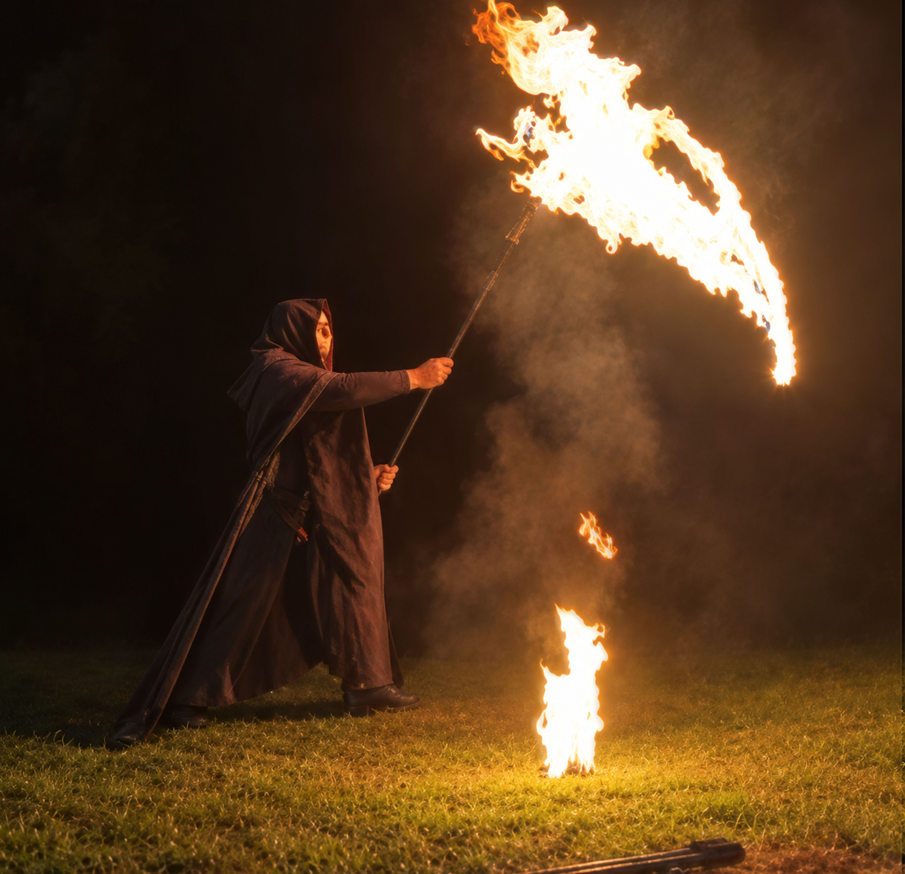
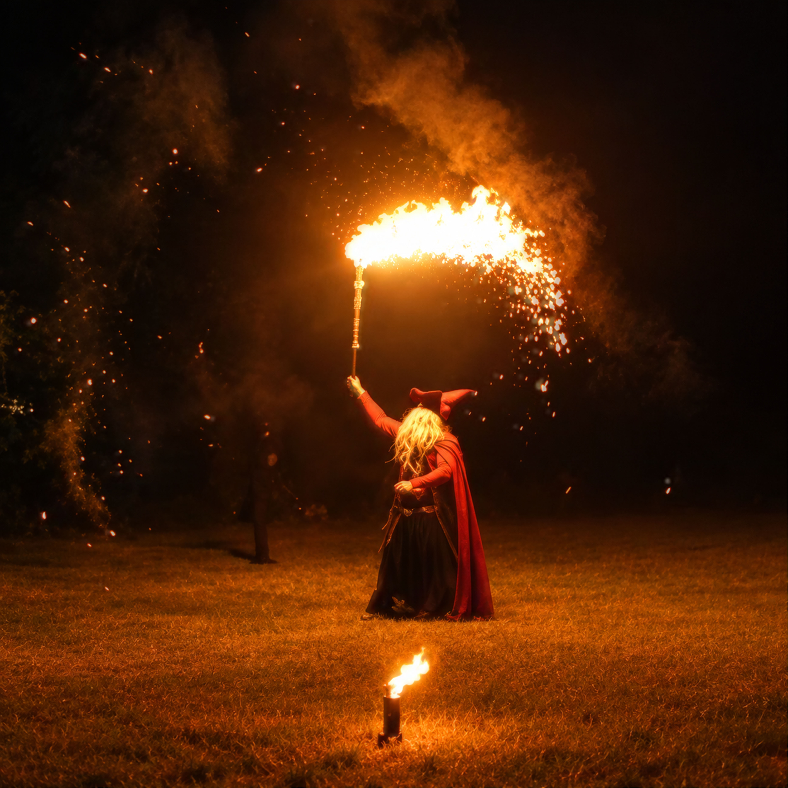
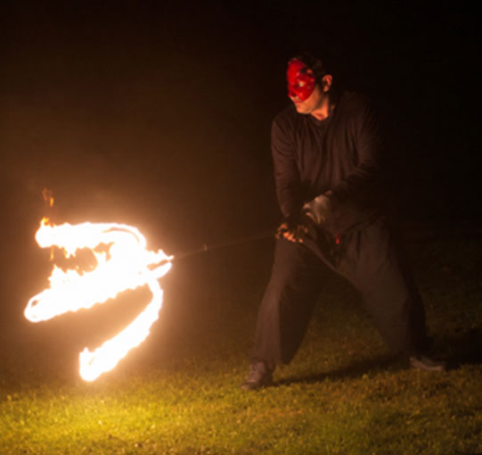
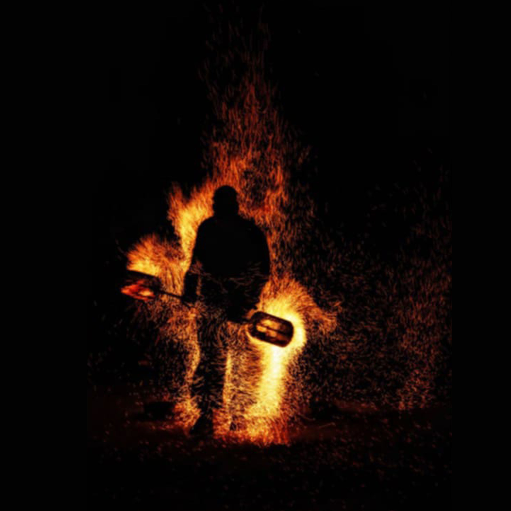

Animation Halloween : spectacle de feu et ambiance mystérieuse
Halloween est l'occasion de créer une ambiance différente, entre mystère,
imagination et petites frayeurs. Le feu apporte naturellement une atmosphère
particulière à cette fête et permet de proposer une animation originale
pour petits et grands.
Je propose des animations Halloween pour les communes, associations,
comités des fêtes, écoles et organisateurs d'événements en Savoie,
Haute-Savoie et Isère.
Spectacle de feu, personnages, jonglage enflammé, effets visuels ou
interventions ponctuelles : les différentes possibilités peuvent être
adaptées à votre événement et à l'ambiance que vous souhaitez créer.
Les Flammes de l’Enfer : le spectacle de feu spécial Halloween
Pour une animation Halloween, je recommande particulièrement
Les Flammes de l’Enfer.
Ce spectacle familial d'environ 30 minutes mêle jonglage enflammé,
personnages, humour, flammes et effets pyrotechniques dans un univers
mystérieux et légèrement inquiétant.
L'idée est de retrouver l'esprit d'Halloween sans tomber dans une
ambiance trop sombre ou trop effrayante. Les personnages jouent avec
les codes de la fête et les situations amusantes permettent aux
enfants comme aux adultes de profiter pleinement du spectacle.
Les flammes, les agrès de feu, les personnages et les effets visuels
s'enchaînent au rythme de la musique pour créer un véritable spectacle
d'Halloween, accessible à toute la famille.

Les personnages des Flammes de l’Enfer au cœur de votre événement
Les personnages des Flammes de l’Enfer peuvent également intervenir
directement au cœur de votre événement, en dehors du spectacle
principal.
Selon le format choisi, je peux incarner différents personnages et
créer des apparitions ou des situations inattendues pour surprendre
le public.
Imaginez par exemple la Faucheuse à la tête d'un cortège d'Halloween.
Elle avance parmi les visiteurs puis s'arrête soudainement, allume sa
faux et la fait tournoyer dans une impressionnante démonstration de feu.
Un fantôme malicieux peut également aller à la rencontre du public
pour distribuer quelques bonbons, tandis qu'un vieux sorcier peut
surgir au détour d'une allée avec quelques effets de feu ou d'artifices.
Ces interventions peuvent prendre différentes formes : apparition
ponctuelle, accueil du public ou véritables happenings. Elles permettent
de faire vivre l'univers d'Halloween tout au long de la soirée, tout en
conservant une ambiance ludique et familiale.

Des animations Halloween à la carte
Le spectacle peut être complété par différentes prestations pour créer
une animation Halloween plus personnalisée.
Ces éléments peuvent être proposés seuls ou intégrés à une soirée
plus complète, selon vos envies, votre lieu et votre budget.
Du jonglage de feu pour petits et grands
Le jonglage de feu permet d'apporter une véritable présence visuelle
à votre animation. Bâtons, épées ou autres agrès spécialement conçus pour Halloween comme un trident et une faux enflammés
peuvent être utilisés selon le format de la prestation.
Les figures et les effets sont adaptés au contexte afin de proposer
une animation impressionnante sans perdre le côté ludique et familial
de la soirée.

Des décors enflammés pour créer l'ambiance
Des décors de feu peuvent également contribuer à transformer le lieu
de votre événement et renforcer l'ambiance d'Halloween.
Portes de feu, structures enflammées, éléments décoratifs ou créations
spécialement imaginées pour votre événement : différentes solutions
peuvent être envisagées en fonction du lieu et du public.

Des effets de feu pour ponctuer la soirée
Des effets de feu peuvent être utilisés à différents moments de votre
événement pour créer des apparitions, des surprises ou simplement
renforcer l'ambiance.
Tourbillons d'étincelles, effets de flammes et autres effets visuels
peuvent notamment accompagner l'apparition d'un personnage ou marquer
un moment particulier de la soirée.

Une animation Halloween pensée pour toute la famille
Halloween ne signifie pas forcément faire peur. L'animation peut au
contraire jouer sur le mystère, l'humour, les personnages et la
fascination du feu pour permettre à plusieurs générations de profiter
du même événement.
Les Flammes de l’Enfer s'inscrit dans cet esprit : une ambiance
mystérieuse et quelques frissons, mais aussi beaucoup de spectacle,
de musique et d'humour.
Le contenu peut également être adapté selon le public attendu, qu'il
s'agisse d'une fête de village, d'une animation communale, d'une soirée
associative ou d'un événement organisé pour les familles.
Une animation adaptée à votre événement
Chaque événement Halloween possède son propre cadre. Le lieu, le nombre
de visiteurs, les horaires et l'ambiance recherchée peuvent être pris en
compte pour construire une prestation cohérente.
L'animation peut ainsi prendre la forme d'un spectacle complet, d'une
intervention ponctuelle ou d'une combinaison de plusieurs prestations.
Une prestation préparée avec soin
Les prestations de feu sont préparées en tenant compte des caractéristiques du lieu et du contexte de l'événement. Les conditions de sécurité et les besoins techniques sont définis en amont afin que l'animation puisse se dérouler dans de bonnes conditions.
Faites entrer le feu dans votre soirée d'Halloween
Vous organisez une fête Halloween et recherchez une animation familiale,
originale et immersive ?
Contactez-moi pour me présenter votre événement et connaître
les possibilités.
Réponse personnalisée et devis gratuit.